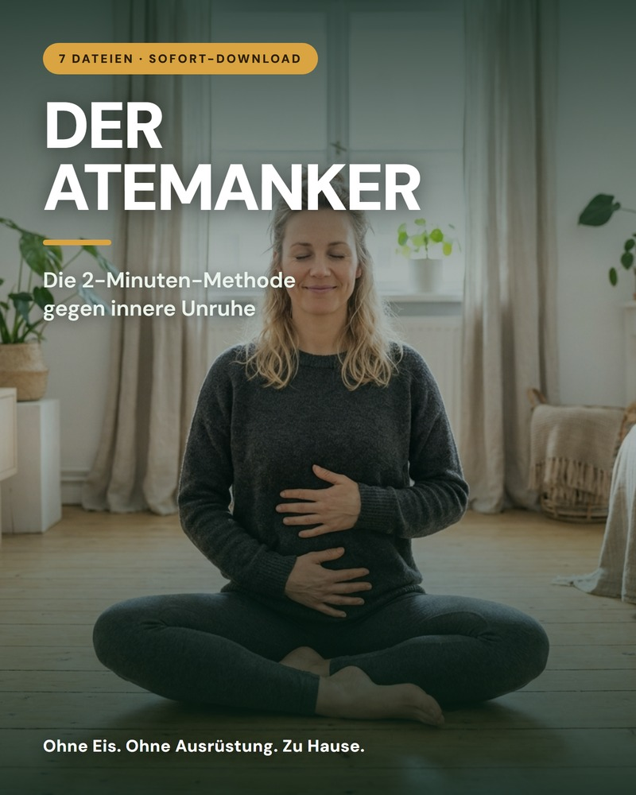
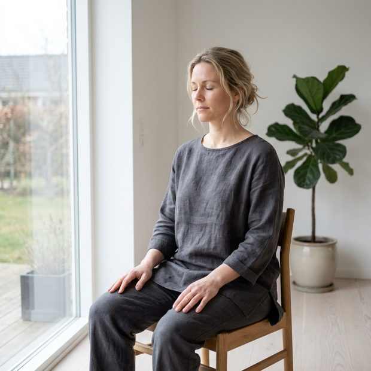
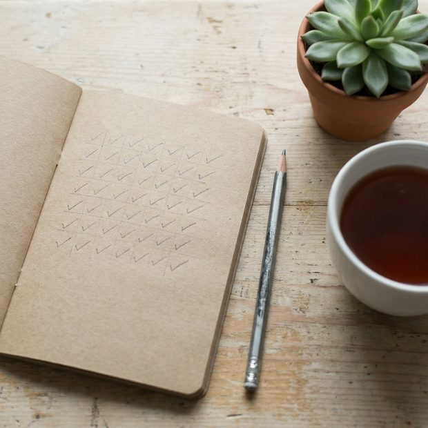
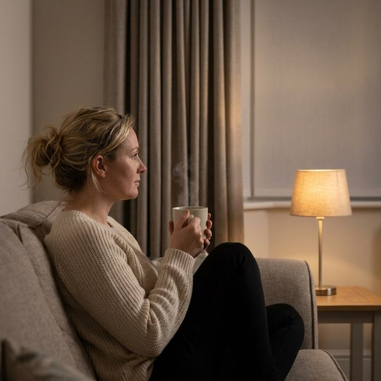
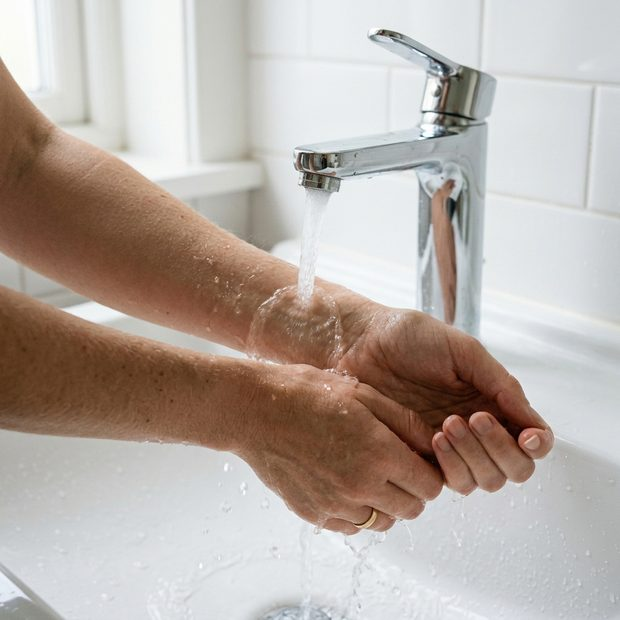
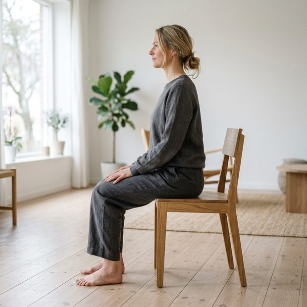

Die 2-Minuten-Methode, die deinem Körper das Signal gibt, aus dem Daueralarm auszusteigen. Im Sitzen, zu Hause, im Warmen — ohne Eis, ohne Ausrüstung und ohne dass jemand im Raum etwas mitbekommt.

Einmalzahlung. Für immer deins. Kein Abo.
Sofort-Zugang holenDas Problem sitzt nicht im Kopf. Es sitzt im Körper — und der hört keine Argumente. Er hört auf ein einziges Signal, und dieses Signal ist dein Ausatmen.
Nicht tiefer atmen. Nicht mehr atmen. Nur länger ausatmen als einatmen.
Beim Einatmen wird dein Herzschlag schneller, beim Ausatmen langsamer. Verlängere das Ausatmen, und du verlängerst genau den Teil, in dem dein Körper herunterfährt. Mehr ist das Prinzip nicht.
Zwölf Atemzüge. Das ist eine Übung. Wer keine zwanzig Minuten am Tag übrig hat, ist genau die Person, für die das hier gebaut wurde — und nicht die, die dafür entschuldigt wird.
Du brauchst einen Stuhl. Keine Matte, keine App, kein Abo, keine Ausrüstung und nichts Kaltes. Es funktioniert bei dir zu Hause, im Warmen, im Sitzen.
Nummeriert von Schritt 1 bis Bonus 2 — du musst nie überlegen, was als Nächstes dran ist.

Schritt 2 — Der Atemanker
Die Grundübung: vier Sekunden ein, sechs Sekunden aus. Dazu die Haltung, die Hand auf den Rippen und fünf Varianten für Schreibtisch, Weg und Warteschlange.
Schritt 3 — Der Notfall-Anker
Neunzig Sekunden für den Moment, in dem es dich gerade erwischt. Im Sitzen, ohne Hilfsmittel, ohne dass jemand im Raum etwas mitbekommt.

Schritt 4 — Dein 21-Tage-Plan
Eine Aufgabe pro Tag, nie länger als fünf Minuten. Der Teil, der aus einer Übung eine Gewohnheit macht — mit Häkchen-Tabelle zum Ausdrucken.

Schritt 5 — Die Abendroutine
Für den Kopf, der abends lauter wird als tagsüber, und für die Nächte, in denen du um drei wach liegst und rechnest.

Bonus 1 — Kälte ohne Eis
Der kleine Verstärker am Waschbecken: kaltes Wasser aufs Handgelenk, aufs Gesicht, die letzten zwanzig Sekunden der Dusche. Freiwillig.
Bonus 2 — Dein Ruhe-Tagebuch
Vorlagen zum Ausdrucken. Nach drei Wochen siehst du schwarz auf weiß, was sich verändert hat — und was dich zuverlässig hochfahren lässt.

Schritt 1 — Fang hier an
Warum dein Körper Alarm schlägt, obwohl nichts passiert, warum ausgerechnet das Ausatmen ihn abstellt, und die Sicherheitsregeln.
zum Weitersehen wischen
Drei Stufen am Waschbecken und in der Dusche, jede unter dreißig Sekunden. Mit den Regeln, die dabei nicht verhandelbar sind.
Wochenblätter, ein Auslöser-Blatt und drei Abendfragen. Zum Ausdrucken, damit du nach 21 Tagen etwas in der Hand hast statt eines Gefühls.
Zusammen 33 € wert. Heute im Paket enthalten.
Über den sicheren Hotmart-Checkout. Einmalzahlung, kein Abo, keine Verlängerung.
In wenigen Minuten, als sieben PDF-Dateien zum Herunterladen. Auf Handy, Tablet, Rechner oder ausgedruckt.
Nicht nächsten Montag. Schritt 2 lesen, einmal mitmachen, fertig. Das sind fünf Minuten, einmalig.
Eine Zahlung. Sofortige Lieferung. Für immer deins.
Eine Zahlung. Kein Abo. Keine Verlängerung.
Ja, ich will den AtemankerSicherer Hotmart-Checkout. Lieferung per E-Mail in wenigen Minuten.
Kauf es, lade es herunter und üb sieben Tage lang. Wenn es dir nichts bringt, schreibst du uns und bekommst dein Geld zurück — ohne Formular, ohne Begründung, ohne Rückfragen. Die Dateien liegen längst auf deinem Gerät, und dort bleiben sie auch.
Das Einzige, was du hier riskieren kannst, sind zwei Minuten.
Wer ständig unruhig ist, wurde schon genug versprochen. Deshalb hier zuerst das, was wir nicht behaupten.
Das verspricht dir hier niemand. Das Ziel ist kleiner und ehrlicher: schneller wieder runterkommen als vorher.
Der Atemanker ist eine Übung. Er ersetzt weder Ärztin noch Psychotherapie, stellt keine Diagnose und ist kein Medikament. Wenn du Medikamente nimmst, nimmst du sie weiter.
Beim ersten Mal passiert bei vielen Menschen schlicht nichts. Der Effekt kommt aus der Wiederholung — deshalb liegt dem Paket ein 21-Tage-Plan bei und keine Wunderübung.
Wenn du gerade in einer akuten seelischen Krise steckst, ist das hier nicht dein nächster Schritt. Dann hol dir bitte Unterstützung bei einem Menschen.
Nein. Das Kalte ist bei uns ein freiwilliger Bonus am Waschbecken, und du kannst ihn komplett weglassen, ohne dass dir etwas fehlt. Die Methode selbst findet im Warmen statt, im Sitzen, angezogen.
Nein, und das ist wichtig: In diesem Paket wird nirgends hyperventiliert und nirgends die Luft mit leeren Lungen angehalten. Schnelles, tiefes Dauer-Atmen erzeugt genau die Symptome, die du loswerden willst.
Zwei Minuten pro Übung. Der Plan sieht ab Woche 2 zweimal am Tag vor — das sind vier Minuten. Mehr wird es dauerhaft nicht.
Deshalb steht in Schritt 2 eine ganze Übung nur dafür, was du machst, wenn dir sechs Sekunden zu lang sind, und eine Variante, bei der du gar nicht zählst, sondern Schritte gehst.
Sieben PDF-Dateien, nummeriert von Schritt 1 bis Bonus 2, zusammen in einer ZIP-Datei. Kein Kurs-Login, kein Video, nichts, was abläuft.
In der Schwangerschaft sprich bitte vorher mit deiner Ärztin oder deinem Arzt — das steht auch in Schritt 1. Dasselbe gilt bei Herz- oder Lungenerkrankungen, Epilepsie und sehr niedrigem Blutdruck.
Dann schreibst du innerhalb von 7 Tagen und bekommst dein Geld zurück. Ohne Formular und ohne Begründung.
Du brauchst keinen freien Nachmittag und nichts Kaltes. Nur einen Stuhl.
Den Atemanker sichern — 10 €